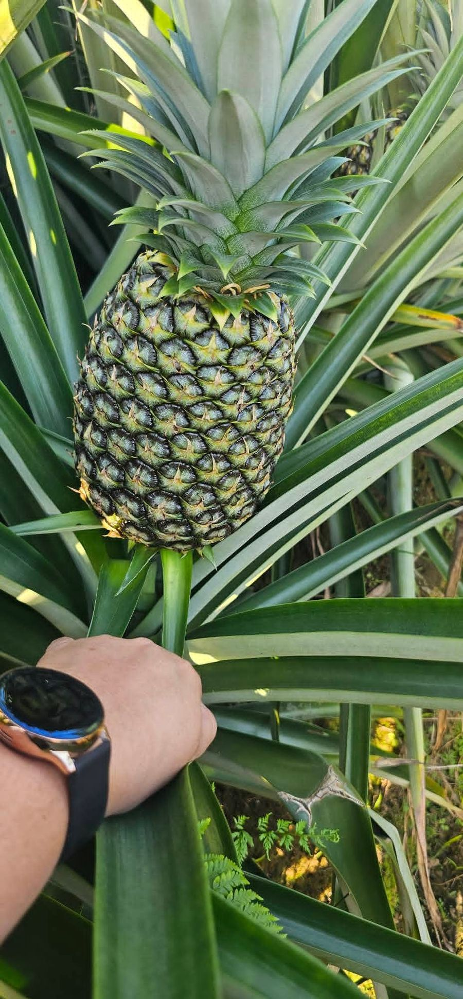
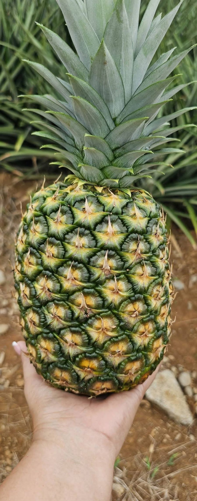
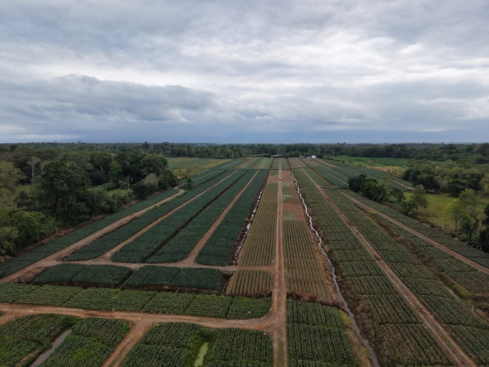
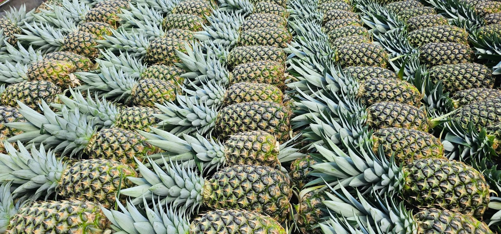
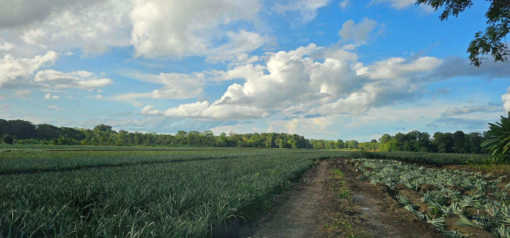
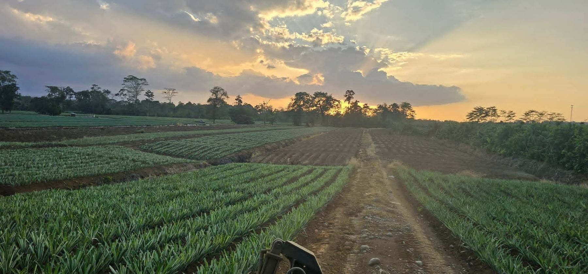
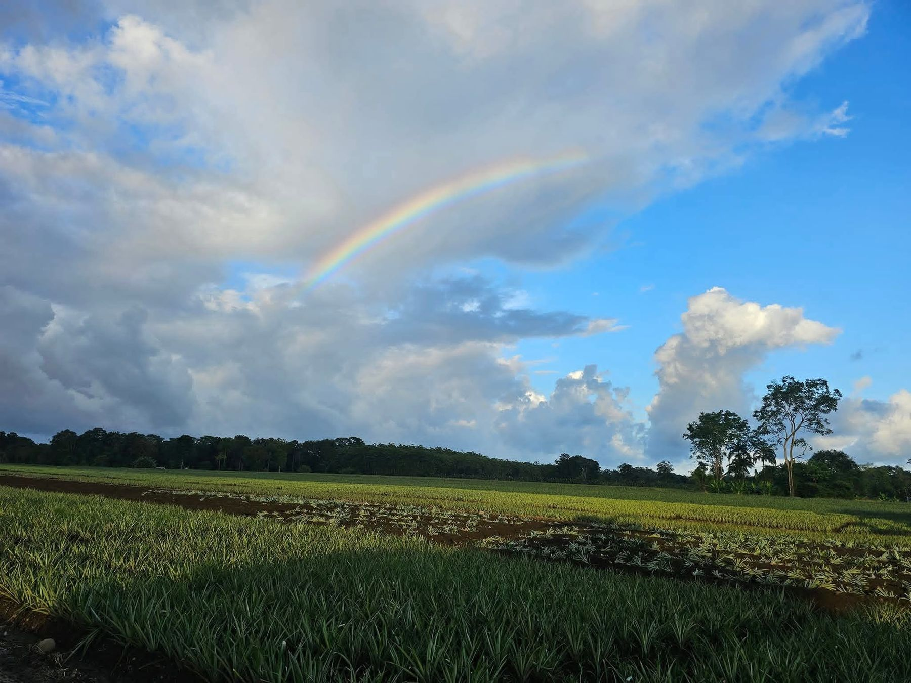
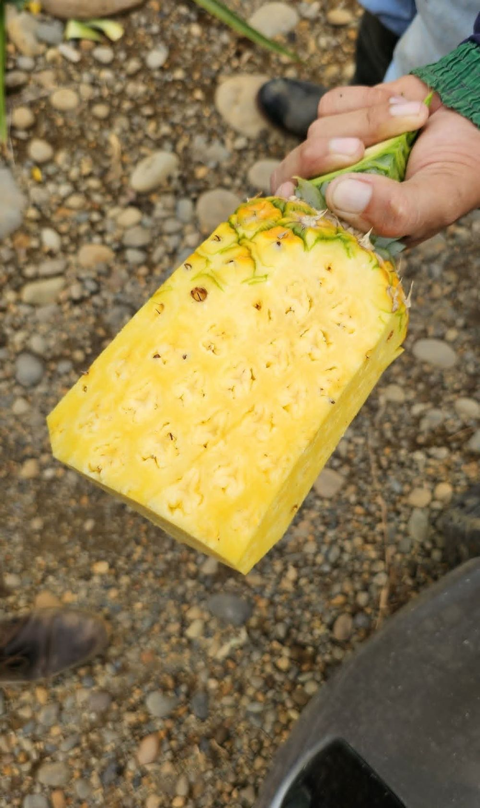

Piña fresca
Fruta cosechada en nuestra propia finca para el mercado internacional.
Inversiones Piña Tica ASVG S.A. cultiva piña desde 2006. Conozca nuestra finca, nuestros calibres y cómo llega la fruta al mercado europeo.

Cultivando piña desde ese año, con la mira en la calidad.
Fruta de todos los tamaños para armar su pedido.
Cultivamos, cosechamos y coordinamos la salida de la fruta para que usted compre con confianza.
Producimos piña fresca en nuestra finca y la vendemos a Tropicales del Valle, la comercializadora que la exporta al mercado belga. Si su empresa quiere conocer nuestra producción, con gusto la atendemos.
Contáctenos

Cosechamos fruta de todos los calibres para completar cada contenedor.
Productores de piña desde 2006.
Seguimos el cultivo desde la preparación del terreno hasta la cosecha.
Procesos responsables y mejora continua en cada etapa.




Desde 2006 cuidamos cada etapa del cultivo, desde la preparación del terreno hasta la cosecha, para entregar fruta que cumpla con las exigencias del mercado.
Ver el procesoBrindar productos agrícolas de alta calidad, cultivados y procesados en Costa Rica, satisfaciendo las necesidades de los mercados nacionales e internacionales mediante procesos responsables y eficientes.
Ser una empresa costarricense reconocida internacionalmente por la calidad de sus productos agrícolas, su compromiso con la innovación, sus clientes y el desarrollo sostenible.
Un recorrido con seguimiento en cada etapa para entregar fruta consistente.
HablemosDejamos el suelo listo para recibir la nueva siembra.
Plantamos por lotes para dar seguimiento al desarrollo del cultivo.
Cuidamos el suministro de agua que necesita la planta en cada etapa.
Monitoreamos los lotes para proteger la calidad y el volumen de la cosecha.
Recolectamos la fruta en sus distintos calibres, del #5 al #10.
Vendemos a Tropicales del Valle, que la exporta al mercado europeo.
Piña fresca, cultivada en nuestra finca en Costa Rica para el mercado internacional.
Vendemos la fruta a la comercializadora Tropicales del Valle, que se encarga de exportarla. El destino final es el mercado belga.
Trabajamos con los calibres #5, #6, #7, #8, #9 y #10, según la cosecha disponible.
Hoy completamos los contenedores con fruta de varios calibres. Si su empresa necesita uno en particular, escríbanos y revisamos la disponibilidad de la cosecha.
Complete el formulario de contacto con el volumen aproximado, el calibre y el destino que le interesan, y nos pondremos en contacto con usted.
Escríbanos con el volumen aproximado, el calibre y el destino que le interesan.